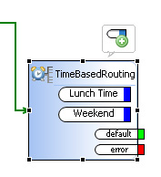
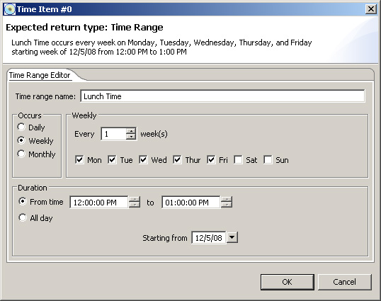

|
|
ActionStep TimeBasedRouting Description
Takes the appropriate exit path determined by time. To add additional time condition exit paths, select the TimeBasedRouting Action step and click the "Add Time Range" bubble:
 To edit a Time Range; double click on the exit path. This will bring up the "Time Range Editor":  The Occurs section selects what interval type to create the time range with (Daily, Weekly, and Monthly). Selecting between these changed the group left of the Occurs group in to the following corresponding interval types:
The duration is the time in which this event occurs (you can select the from time to time or the All day option). The Starting from value is the date at which to start checking for this condition. Attributes
|